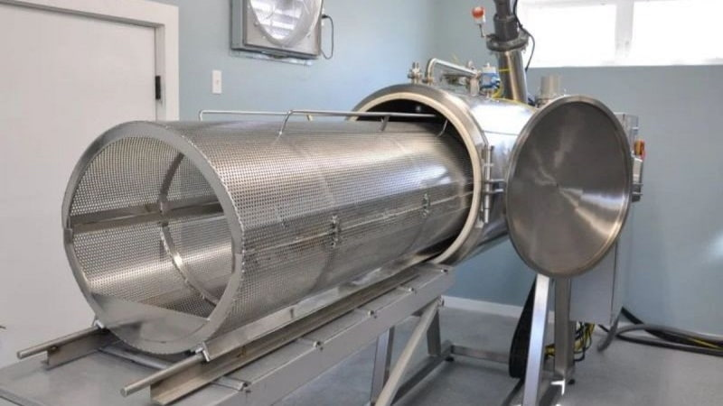

Aquamação, também conhecida como cremação alcalina ou ressomação, é um processo de redução de restos humanos que utiliza uma combinação de água, calor e produtos químicos alcalinos, como por exemplo o hidróxido de potássio (um tipo de alvejante). Este método está sendo introduzido como uma alternativa às opções tradicionais de sepultamento ou cremação.
Benefícios Ecológicos:
Dificuldades e Limitações